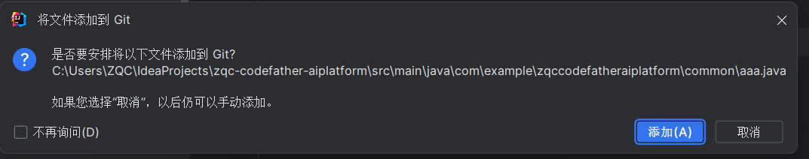
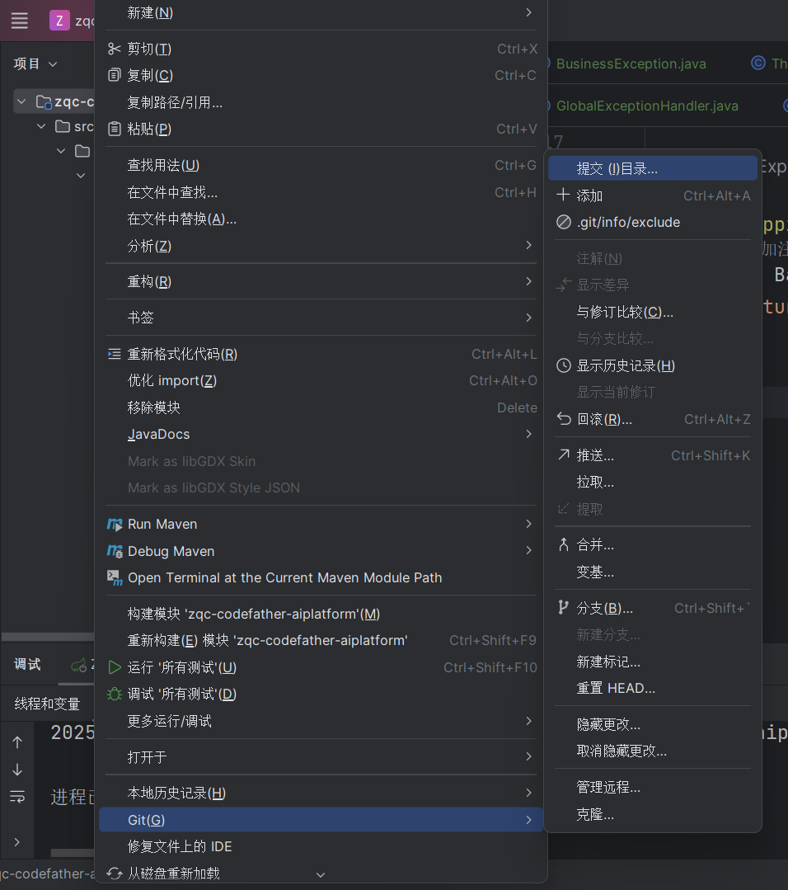
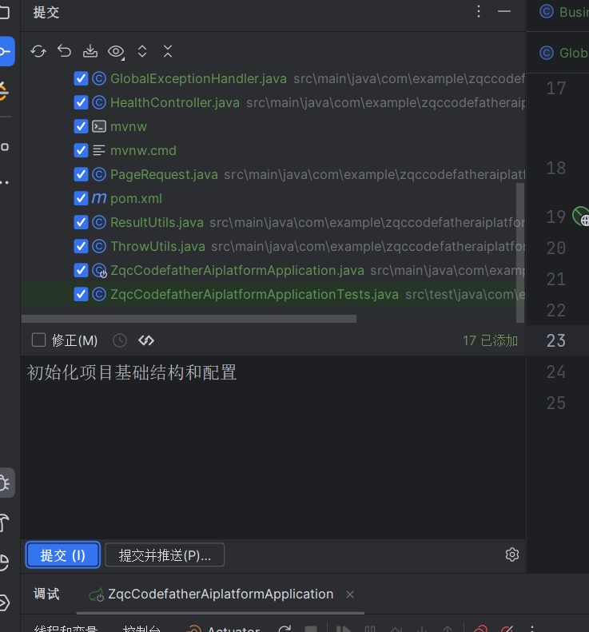
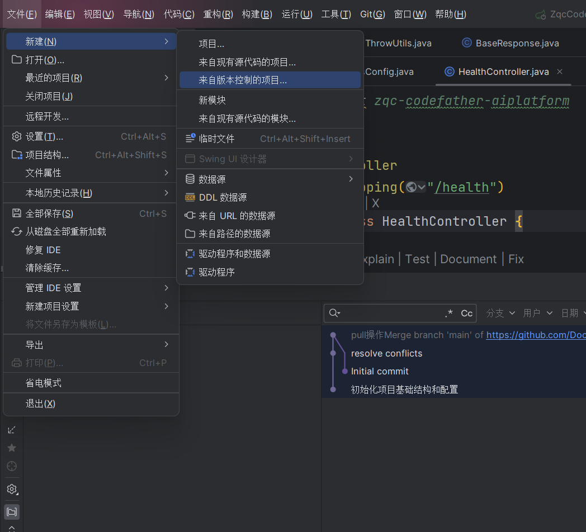
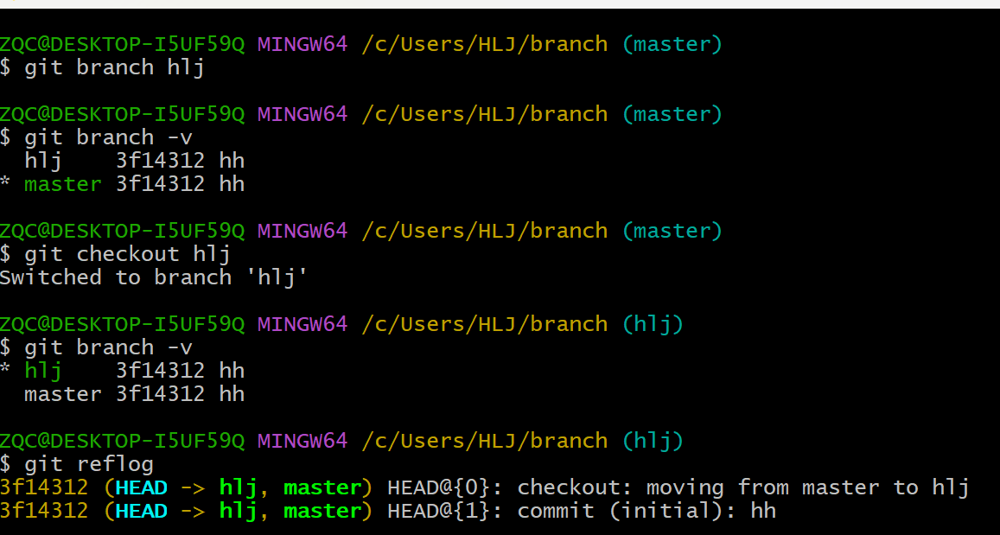
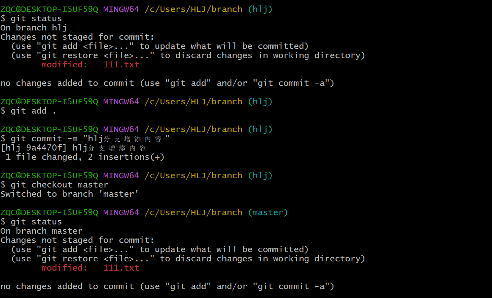
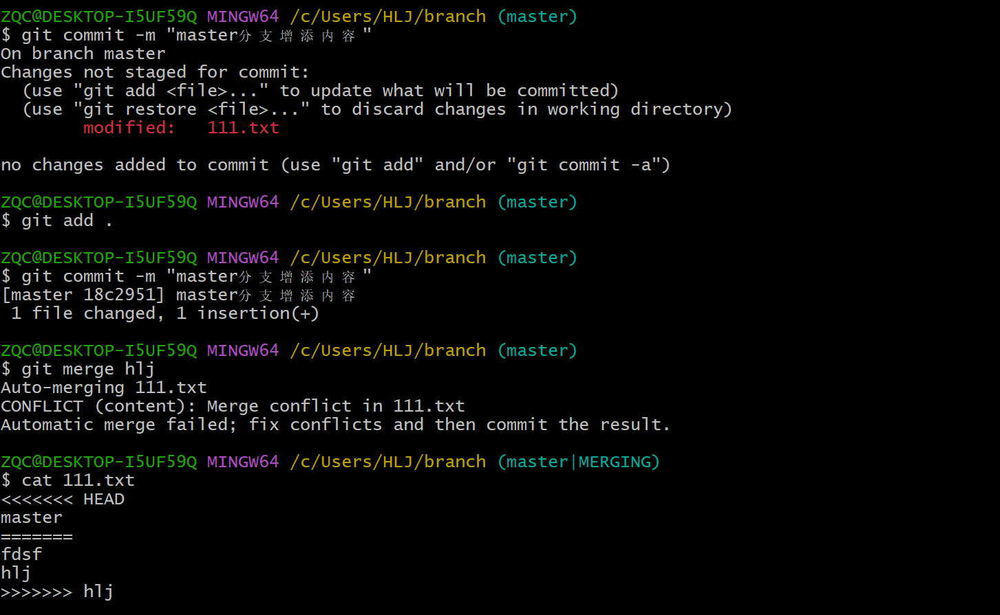
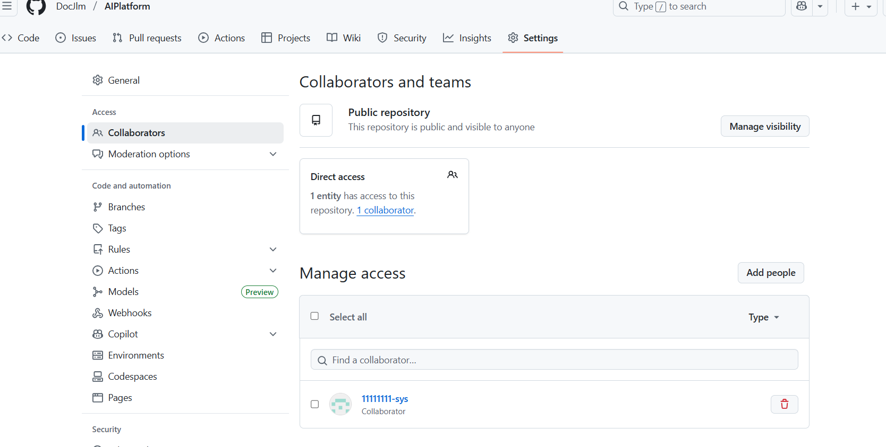

git团队协作
git团队协作
写这篇文章其实是为了软件工程这个课需要展现团队合作，但是现在大学生大部分都不用（我也只push），科普一下（很有必要掌握），所以文章顺序就不是很符合逻辑，我会先讲解IDEA中怎么操作然后再说下Git Bash的操作，没去实习过所以也不知道是否规范，欢迎大家指正。
IDEA操作
只需在创建项目的时候勾选创建git仓库即可，这一步相当于git init。

这个比如你新建一个类，这个就相当于git add,提交到暂存区。


这个就相当于git commit -m 提交到本地库。不要提交并推送，正常操作是你需要先pull再push，为了避免代码冲突、保证团队代码同步。
接下来的操作我懒得截屏了1
2
3
4
5
6
7
8
9
10
11
12
13git remote add origin https://github.com/DocJlm/AIPlatform.git #关联远程仓库，起别名一般喜欢叫origin
git pull origin main --allow-unrelated-histories #字面意思允许不相关历史合并
#接下来解决冲突重复add commit
git push origin master:main #推送到远程库，因为本地仓库是master分支远程是main分支，这里如果没有添加README就直接master就好因为什么都没有github空仓库默认没有分支，你上传上去就是master
git branch -m master main # 重命名本地的 master 分支为 main
git pull origin main
git push origin main #之后就省事了push,pull就ok
如果从合作者角度来说git clone更为合适1
git clone git@github.com:DocJlm/AIPlatform.git

IDEA我感觉也没简单到哪去。。。
然后还是要注意冲突问题，下面有两个建议：
1.团队开发的时候避免在同一个文件中改代码
2.在修改一个文件前，先pull再push
Git Bash
其实上面已经涉及了不少了。然后这里还会涉及一个fork操作不过这是跨团队合作目前来看也用不到，一些基本操作和逻辑还是一样的。我就挑重点和核心说了，一些没讲到但是也比较重要的比如log,reflog,reset等也是需要掌握的，删除没啥说的就rm之后三件套（add commit push），恢复看“指针”就行。
分支
一般来说一个新的独立功能会选择新开一个分支，好处显而易见:并行开发，大大提高效率，增加容错，给我开一个分支我写完直接删了就行（）。

可以自己动手操作一下分支合并解决相应冲突问题。


后续整合之后add commit即可。
接受邀请
建仓者创建邀请

打开链接，accept就好。
比较完整的流程
1 | git clone https://github.com/... |
简化版本
其实建立空仓库（不让github自己添加README）和自己项目关联没必要pull,下面是简化步骤1
2
3
4git remote add origin https://github.com/DocJlm/AIPlatform.git #关联远程仓库，起别名一般喜欢叫origin
git push origin master
结语
其实我不是很理解为啥github上面之前默认分支是master，现在改成main，查了下说主人这个意思嗯嗯，反正master第一印象在我脑子里是大师，功夫熊猫。。。也是多少有点逆天了！